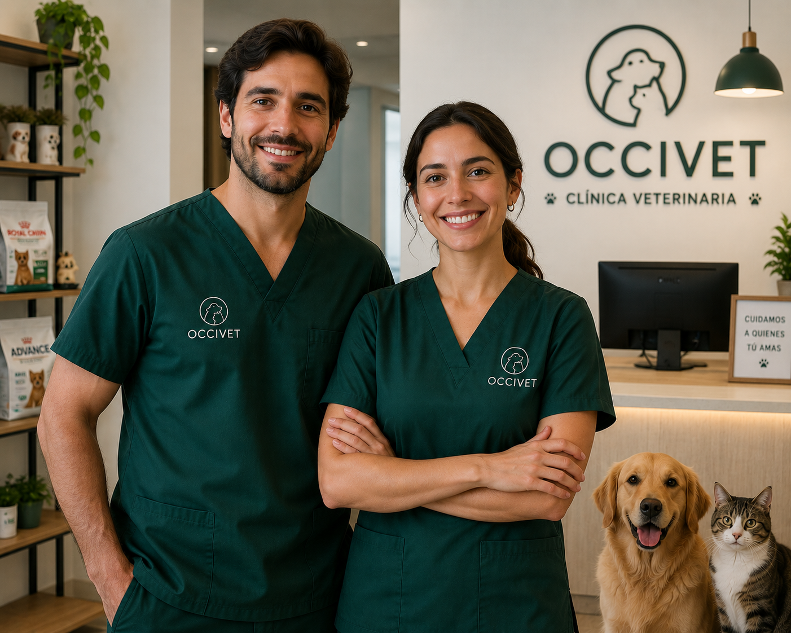

Sobre Nosotros
En Occivet somos un equipo de profesionales apasionados por el bienestar animal. Desde nuestra fundacion, nos dedicamos a brindar atencion veterinaria de calidad con un enfoque cercano, etico y personalizado.
Mision
Proporcionar servicios veterinarios integrales que promuevan la salud y el bienestar de las mascotas, educando a sus dueños sobre el cuidado responsable.
Vision
Ser la clinica veterinaria de referencia en la region, reconocida por nuestra excelencia medica, innovacion y trato humano hacia los animales y sus familias.
Valores
- Compromiso: Con la salud y felicidad de cada mascota que atendemos.
- Empatia: Entendemos el vinculo especial entre las mascotas y sus dueños.
- Profesionalismo: Contamos con medicos veterinarios capacitados y en constante actualizacion.
- Transparencia: Comunicacion clara y honesta en cada diagnostico y tratamiento.
